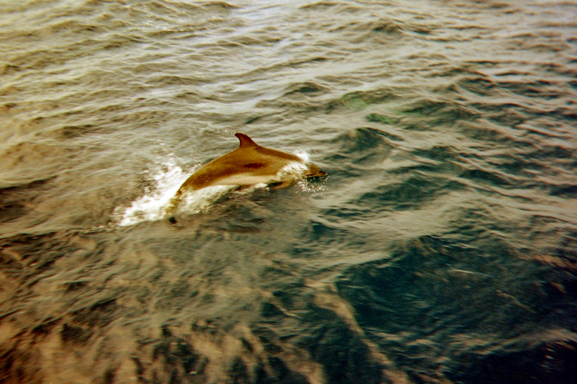
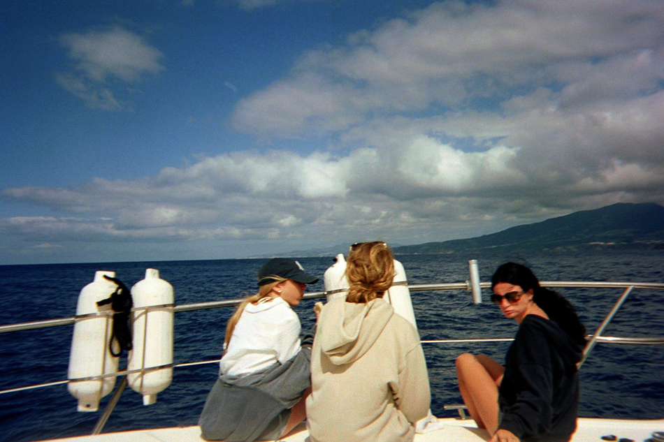
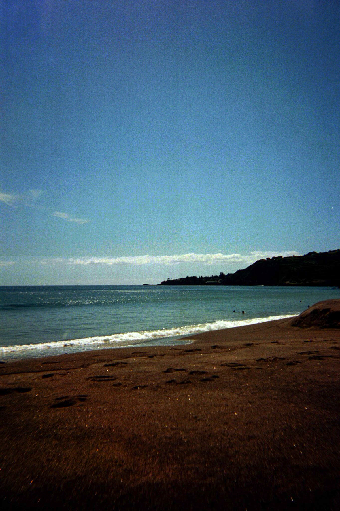
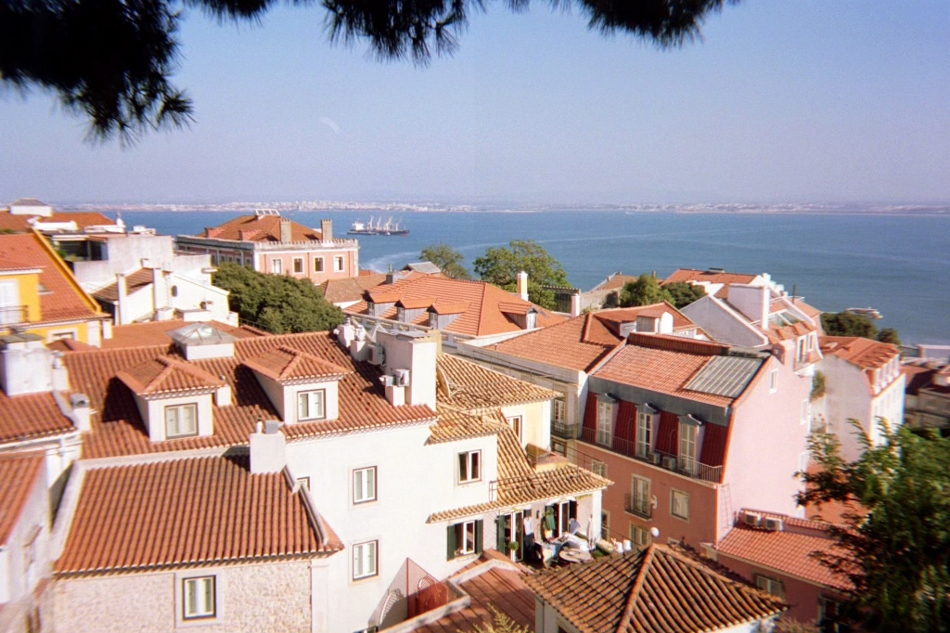
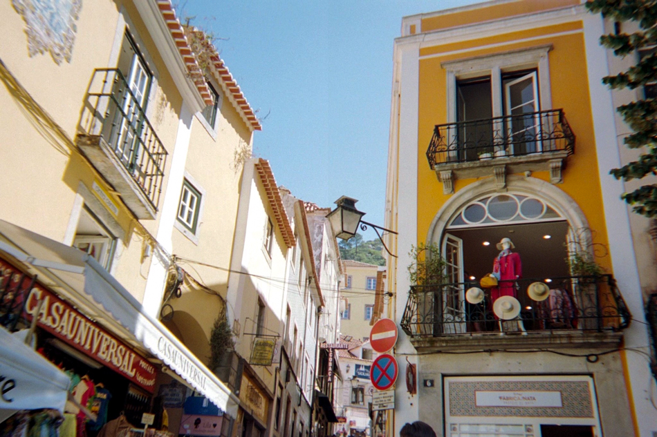
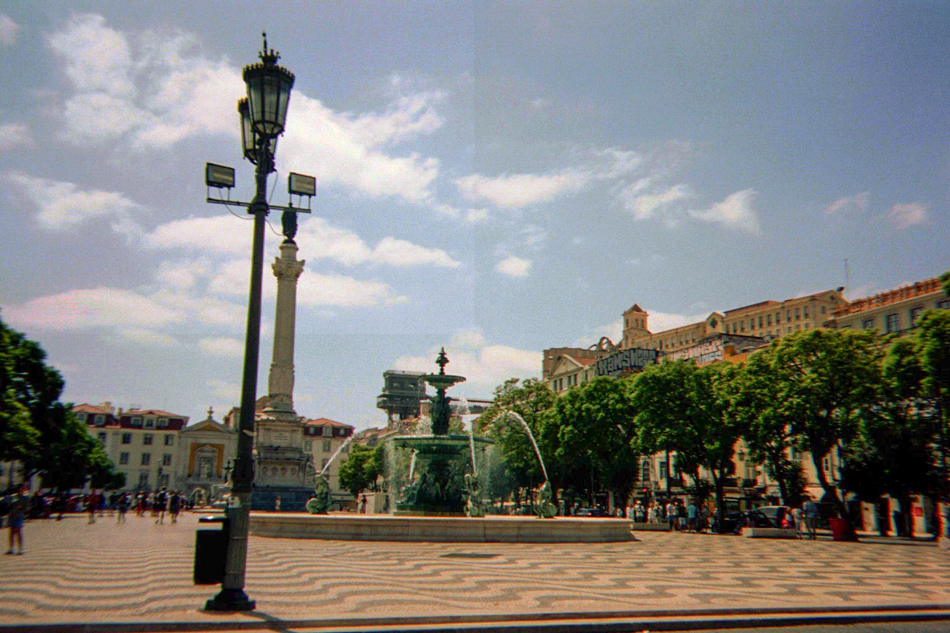
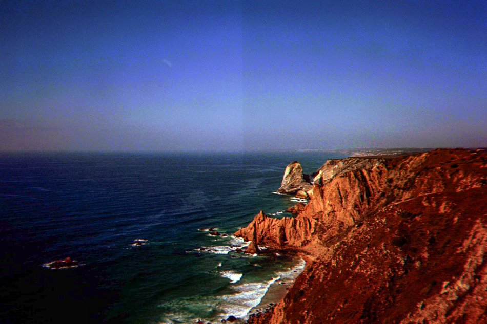

AZORES
Vila Franca do Campo, Portugal -- August 2022
Praia de Água D'alto, Azores -- August 2022

Off the coast of Vila Franca do Campo, Portugal -- August 2022

Off the coast of Ponta Delgada, Portugal -- August 2022

Praia de Água D'alto, Azores -- August 2022

Off the coast of Ponta Delgada, Portugal -- August 2022

LISBON
Jardim Júlio de Castilho, Lisbon -- August 2022

Santa Maria Maior, Lisbon -- August 2022

Praia Lorosae, Lisbon -- August 2022

São Vicente, Lisbon -- August 2022

Rossio Square, Lisbon -- August 2022

Santa Maria Maior, Lisbon -- August 2022
Colares, Portugal -- August 2022

Colares, Portugal -- August 2022